Unas 10.000 personas paralizan hoy el centro de Belgrado a lo largo de casi un kilómetro , y la gente sigue afluyendo , en una urbe ociosa , con un 40 por ciento normal de paro incrementado ahora por la huelga , la desobediencia civil y las dificultades de transporte.
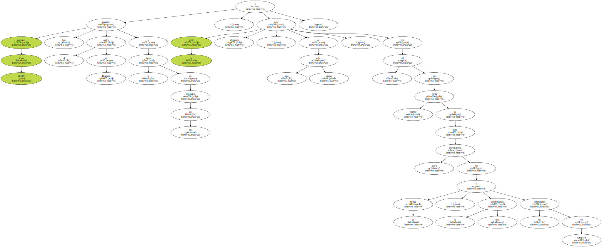También prosiguen hoy los bloqueos de carreteras en torno a varias ciudades de Serbia y los paros en las fábricas como forma de presión contra el jefe de Estado de Yugoslavia , Slobodan Milosevic , para que entregue la Presidencia al candidato opositor Vojislav Kostunica.
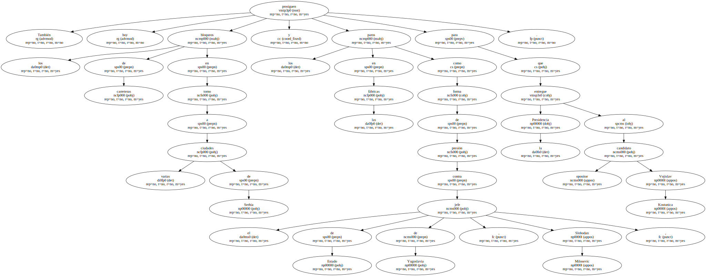Una barrera de personas y maquinaria agrícola y de construcción , con camiones y coches , bloquea la carretera de Lazarevac , a unos 50 kilómetros de Belgrado , a la altura del punto por donde la policía intentaría llevar a las minas de lignito de Kolubara a 86 trabajadores para sustituir a los huelguistas.
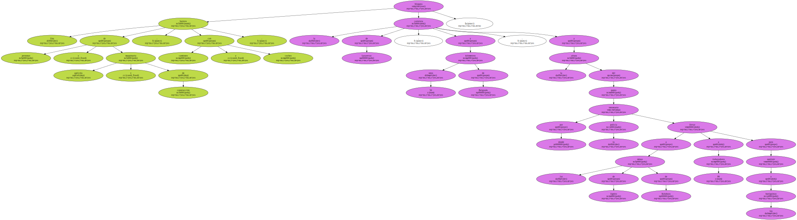La policía intenta poner en marcha la producción de carbón en el tajo abierto de Kolubara para que no se paralice la central termo-eléctrica de Obrenovac , ya que en buena parte de Serbia han comenzado los cortes de electricidad.
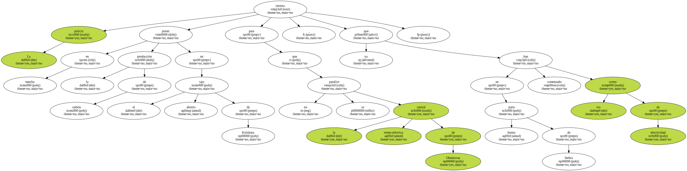La oposición objeta que estos cortes no serían necesarios pero que el régimen los provoca para desprestigiar a la coalición Oposición Democrática de Serbia ( DOS ) , que insiste en la victoria por mayoría absoluta de Kostunica.
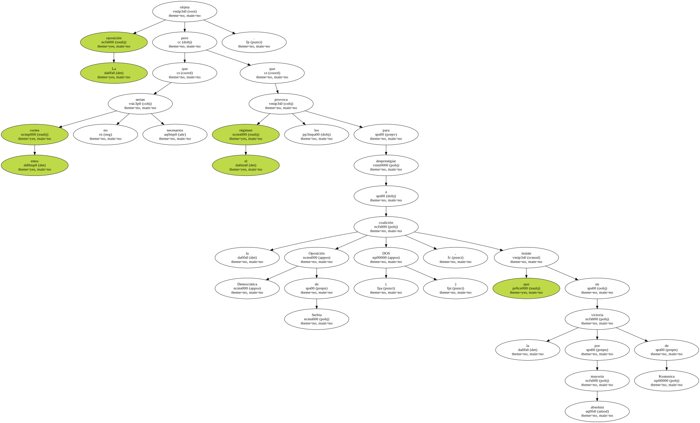La policía trata de dispersar en Nis , 350 kilómetros al sur de Belgrado , a una columna de un centenar de camiones que intenta bloquear la autopista.
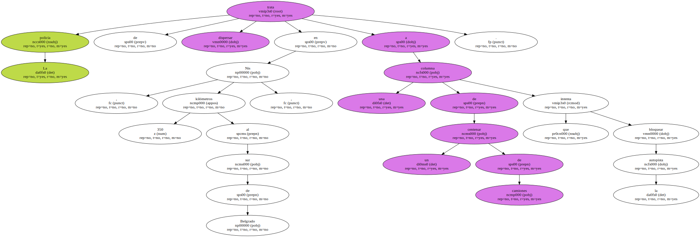La ciudad industrial de Kragujevac , 130 kilómetros al sur de Belgrado , está bloqueada por miles de ciudadanos concentrados en la plaza principal , y con la mayoría de las tiendas y bancos cerrados.
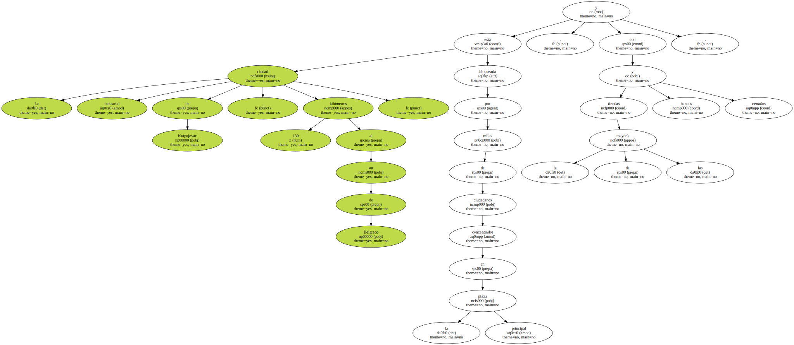Fuentes de la oposición aseguran que numerosos obreros de diferentes fábricas y empresas , así como en el centro médico y en algunos sectores de la administración , se han declarado en paro.

En la ciudad de Cacak no funcionan todas las empresas públicas , Correos , escuelas , instituciones de cultura y médicas , y más de un centenar de camiones se han instalado hoy en los accesos importantes para bloquear el tráfico.
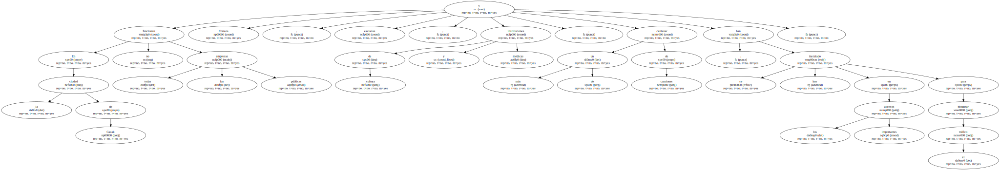En las proximidades de Pozarevac , pueblo natal de Milosevic y de su esposa , Mirjana Markovic , a unos 100 kilómetros de Belgrado , los policías ordenaron dispersarse a los manifestantes que bloqueaban el tráfico , sin recurrir a la fuerza.
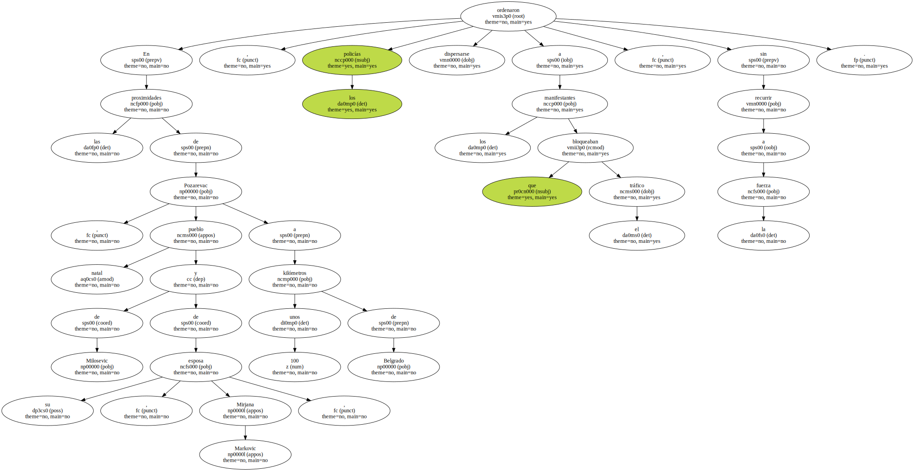Los líderes de la oposición serbia se manifiestan seguros de que su campaña de protestas y desobediencia civil acabará por presionar a Milosevic para que abandone el poder que perdió en las urnas.
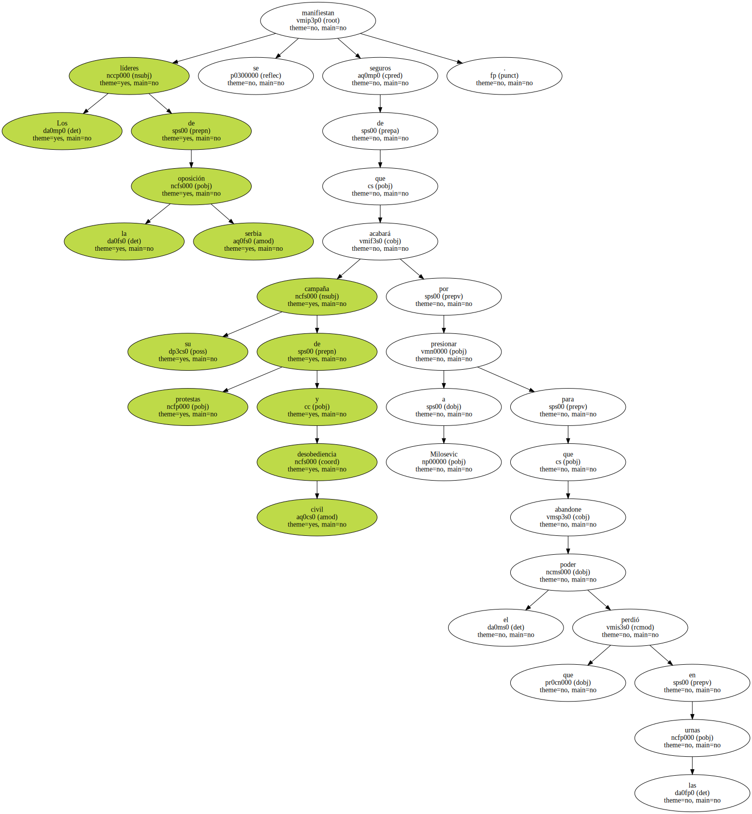Zoran Djindjic , coordinador de DOS , declaró en una emisora de televisión belgradense que las huelgas y bloqueos de carreteras que se han extendido por toda Serbia " obligarán " a Milosevic a que reconozca que Kostunica venció en las presidenciales el pasado 24 de septiembre por mayoría absoluta y no simple.
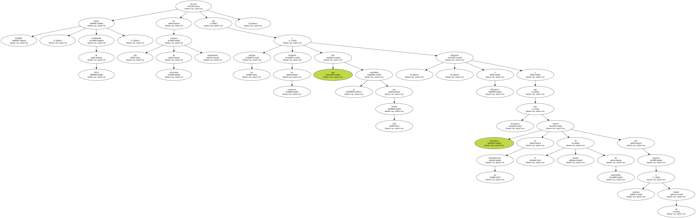La oposición reconoce que Milosevic tendrá probablemente mayoría parlamentaria , pero no acepta que Kostunica tenga que someterse a la humillación de una segunda vuelta el próximo día 8 ya que su victoria por mayoría absoluta le consagró ya presidente.
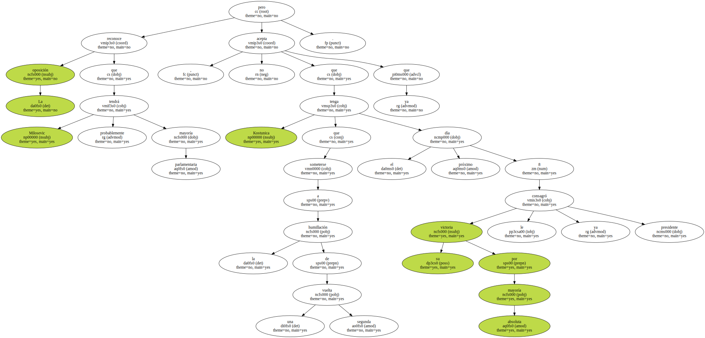Según Djindjic , es ya definitivo que Kostunica no se presentará a la segunda vuelta , a pesar de los consejos occidentales y rusos de que no desaproveche esa oportunidad , ya que todas las encuestas le dan como ganador con mayoría abrumadora.
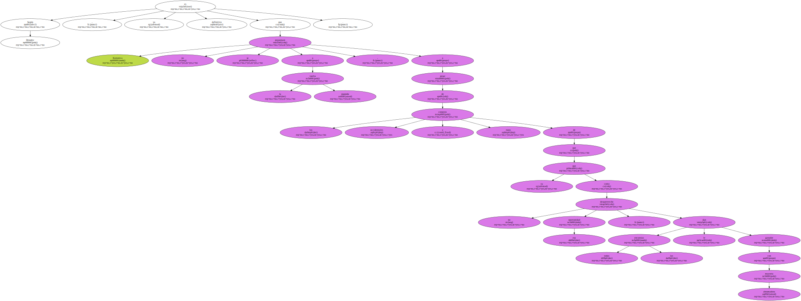El Tribunal Constitucional discutirá hoy una queja de la DOS sobre las irregularidades en el escrutinio de los votos , rechazada ya por la Comisión Electoral estatal , y tendrá de plazo hasta el viernes para decidir al respecto.
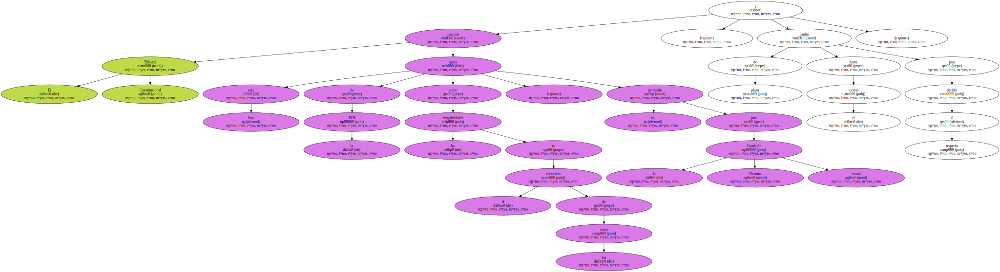